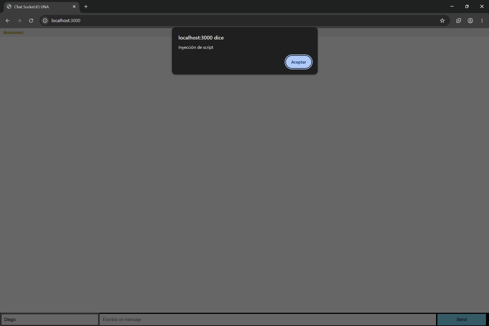
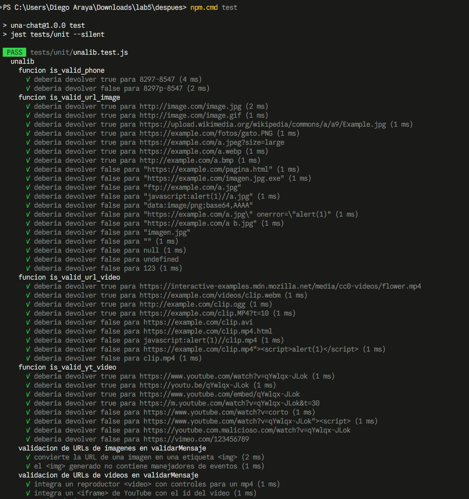
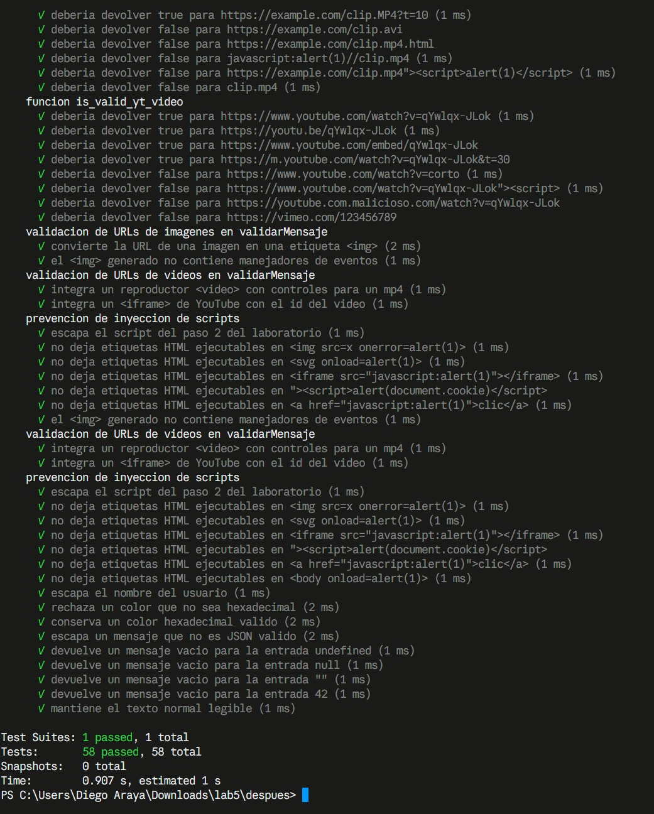
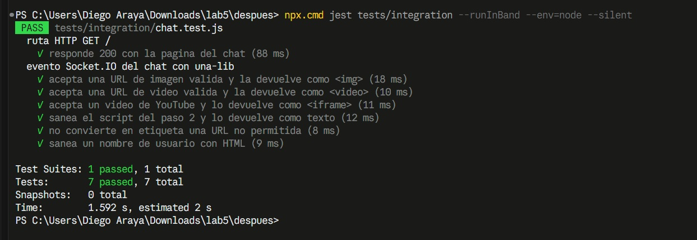
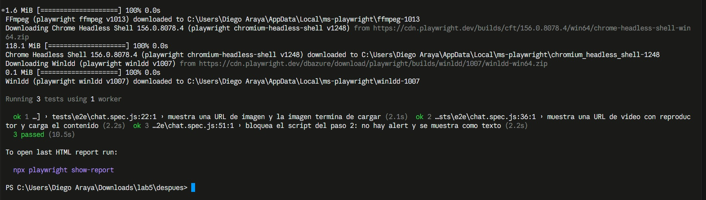

En este laboratorio se ejecutó el proyecto UNA Chat (Node.js, Express y Socket.IO), se comprobó que era vulnerable a la inyección de scripts (XSS) y se corrigió la validación de mensajes en la librería una-lib. Además, se agregó la funcionalidad para mostrar imágenes y videos a partir de URLs. El trabajo se verificó con tres tipos de pruebas automatizadas: unitarias, de integración y end-to-end.
Todo el código está en el repositorio https://github.com/Veldor09/lab5SI, organizado así:
| Ruta | Contenido |
|---|---|
antes/ | Código original y vulnerable de UNA Chat, conservado para reproducir la evidencia 1. |
despues/libs/unalib.js | Librería una-lib con la nueva validación validarMensaje. |
despues/server.js | Backend Express + Socket.IO; valida cada mensaje con una-lib antes de reenviarlo. |
despues/index.html | Frontend del chat. |
despues/tests/unit/ | Pruebas unitarias (Jest). |
despues/tests/integration/ | Pruebas de integración backend + una-lib (Jest, Supertest y socket.io-client). |
despues/tests/e2e/ y playwright.config.js | Pruebas end-to-end con Playwright en Chromium. |
evidencias/ | Capturas de pantalla en JPG. |
repositorio.txt | Enlace al repositorio. |
cd despues npm install npx playwright install chromium npm start # chat en http://localhost:3000 npm test # pruebas unitarias npm run test:integration # npx jest tests/integration --runInBand --env=node npm run test:e2e # npx playwright test --project=chromium --headed npx playwright show-report # reporte HTML de Playwright
En Windows PowerShell, si la política de ejecución bloquea npm, se usa npm.cmd y npx.cmd, como se ve en las capturas.
Se instalaron las dependencias con npm install y se inició la aplicación original con npm start. El chat quedó disponible en http://localhost:3000. En el campo de mensaje se envió el script del enunciado:
<script>alert('Inyección de script');</script>
El navegador mostró el cuadro de alerta, lo que confirma que la aplicación original es vulnerable a la inyección de scripts. El análisis del código mostró tres causas:
$('<li>').html(...) de jQuery, que interpreta el texto como HTML y ejecuta las etiquetas <script>.validateMessage no escapaba nada: devolvía el texto recibido tal cual, también el nombre de usuario y el color.is_valid_url_image e is_valid_yt_video usaban una variable inexistente (phone), por lo que lanzaban un error y nunca reconocían imágenes ni videos.
Las correcciones se hicieron en la carpeta despues/. El método validarMensaje de una-lib (alias en español de validateMessage) ahora recibe el mensaje JSON del cliente y devuelve un objeto seguro para mostrar, con un campo tipo que indica si es texto, imagen o video.
| Entrada | Tratamiento |
|---|---|
| Texto normal o con HTML | Se escapan & < > " ' ` /. El script se muestra como texto y no se ejecuta. |
| URL de imagen | Solo http/https, analizada con new URL(), con extensión jpg, jpeg, png, gif, bmp o webp y sin comillas, espacios ni < >. Se convierte en <img> con la URL escapada. |
| URL de video | Archivos mp4, webm, ogg → <video controls>. YouTube (youtube.com/watch, youtu.be, /embed/) con un id válido de 11 caracteres → <iframe>. |
| URL no permitida | javascript:, data:, ftp:, dominios falsos de YouTube o extensiones no permitidas se tratan como texto escapado. |
| Nombre de usuario | Se escapa y se limita a 50 caracteres. |
| Color | Solo se acepta el formato hexadecimal #RRGGBB; si no, se usa #000000. |
| JSON inválido o vacío | Se devuelve el contenido escapado o un mensaje vacío. |
validarMensaje (despues/libs/unalib.js)var texto = typeof obj.mensaje === 'string' ? obj.mensaje.trim() : '';
if (this.is_valid_url_image(texto)) {
result.tipo = 'imagen';
result.mensaje = this.getImageTag(texto); // <img src="URL escapada">
}
else if (this.is_valid_url_video(texto)) {
result.tipo = 'video';
result.mensaje = this.getVideoTag(texto); // <video src="..." controls>
}
else if (this.is_valid_yt_video(texto)) {
result.tipo = 'video';
result.mensaje = this.getEmbeddedCode(texto); // <iframe> de YouTube
}
else {
result.mensaje = this.escapeHtml(texto); // texto seguro
}
Evento-Mensaje-Server pasa por validation.validarMensaje(msg) antes de reenviarse. El servidor se exporta para poder probarlo, y solo escucha el puerto al ejecutar npm start..css() después de validarlo y el contenido del mensaje, ya saneado por una-lib, se muestra como texto, imagen o reproductor de video.Primero se ejecutaron las 5 pruebas existentes del proyecto (Mocha), que pasaron. Luego las pruebas se migraron a Jest, la misma herramienta que se usa en las pruebas de integración. Se ampliaron a 58 pruebas en despues/tests/unit/unalib.test.js, agrupadas en:
ftp:, javascript:, data:, URLs con comillas o espacios y valores no textuales. También se verifica que la etiqueta <img> generada no tenga manejadores de eventos.<video controls> o el <iframe>.<img onerror>, <svg onload>, <iframe src="javascript:">, <a href="javascript:"> y <body onload>. También el nombre de usuario malicioso, el color inválido, el JSON inválido y las entradas vacías.Comando: npm test (ejecuta jest tests/unit; la carpeta tests/e2e está en testPathIgnorePatterns).

npm test: pruebas de teléfono, imágenes y videos.
El chat no envía los mensajes por una ruta HTTP sino por Socket.IO, con el evento Evento-Mensaje-Server. Por eso, como indica el enunciado, se instaló socket.io-client además de jest y supertest:
npm install --save-dev jest supertest socket.io-client
El archivo despues/tests/integration/chat.test.js levanta el servidor real en un puerto libre y se conecta como lo haría el navegador. Con jest.spyOn se comprueba que el backend llama realmente a validarMensaje de una-lib. Al terminar, se cierran los clientes y el servidor (io.close()). Casos cubiertos:
| Caso | Qué se verifica |
|---|---|
GET / con Supertest | Código 200, tipo text/html y la página del chat. |
| URL de imagen válida | El backend la acepta: tipo: "imagen" y etiqueta <img>; validarMensaje se llamó una vez. |
| URL de video válida (mp4) | El backend la acepta: tipo: "video" y reproductor <video controls>. |
| Video de YouTube | Se devuelve el <iframe> con el id correcto. |
| Script del paso 2 | Se devuelve saneado como texto, sin <script. |
URL no permitida (javascript:) | No se convierte en etiqueta; queda como texto sin < >. |
| Nombre de usuario con HTML | El nombre se devuelve escapado. |
Comando: npx jest tests/integration --runInBand --env=node

Se configuró Playwright en despues/ con JavaScript, la carpeta tests/e2e y el navegador Chromium. En playwright.config.js se definió testDir: './tests/e2e' y use.baseURL: 'http://localhost:3000', que es la URL real del frontend. La opción webServer reutiliza el servidor si ya está iniciado con npm start. Las pruebas corren con un solo worker porque el chat reenvía cada mensaje a todos los clientes conectados.
El archivo despues/tests/e2e/chat.spec.js usa page.goto, getByRole, fill, click y expect para tres casos:
<img> es visible y que terminó de cargar (complete y naturalWidth > 0).readyState ≥ 1 y duración mayor que 0).page.on("dialog") antes del envío. La prueba falla si aparece cualquier alerta. Además comprueba que el mensaje se muestra como texto literal y que no se insertó ningún <script>.Como control, la prueba del script se ejecutó también contra la versión original (antes/) y falló, como se esperaba. Así se confirma que la prueba detecta la vulnerabilidad y que pasa solo con la corrección.
Comando: npx playwright test --project=chromium --headed

| Suite | Herramientas | Comando | Resultado |
|---|---|---|---|
| Unitarias | Jest | npm test | 58 / 58 aprobadas |
| Integración | Jest, Supertest, socket.io-client | npm run test:integration | 7 / 7 aprobadas |
| End-to-end | Playwright (Chromium) | npm run test:e2e | 3 / 3 aprobadas |
Código fuente, pruebas y configuración: https://github.com/Veldor09/lab5SI